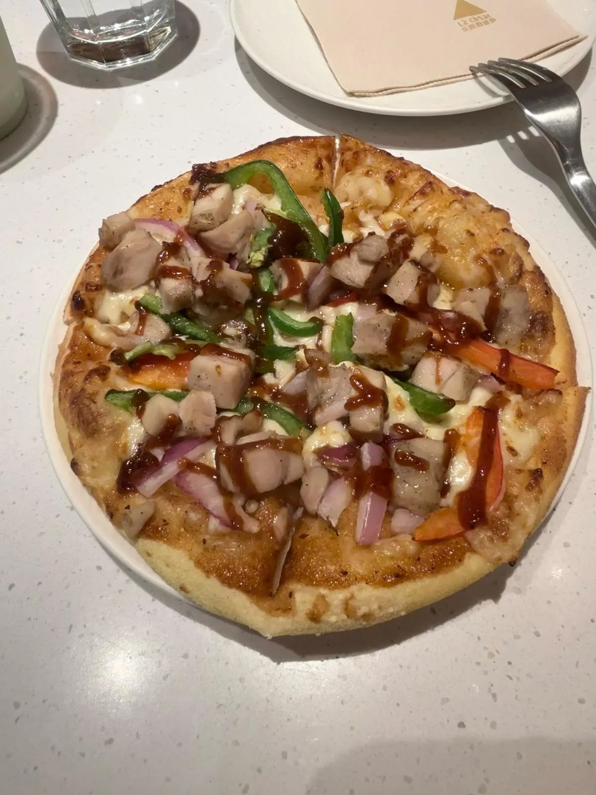
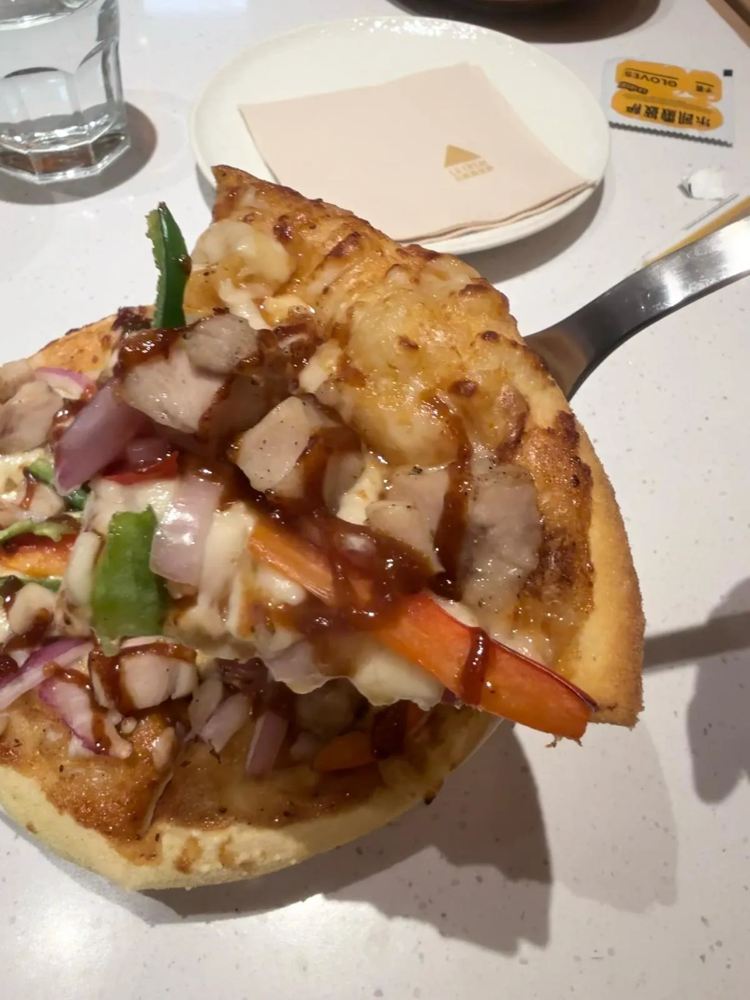
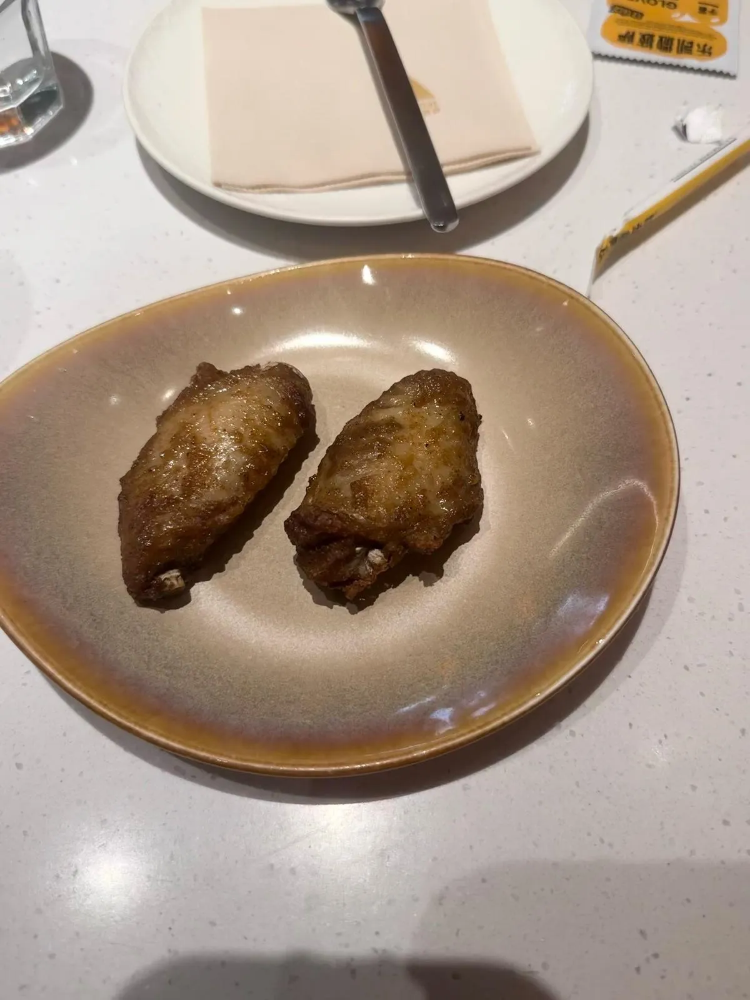

樂凱撒披薩（寶安大仟里店）：一人套餐實付 ¥65.90
深圳寶安大仟里購物中心 B1 一間披薩店。晚市，一個人，自費，唔係平台招待。套餐叫「超滿足一人食」，標價 ¥65.9，微信實付 ¥65.90。一句總結：6 英寸披薩批底有焦色、芝士熔開，一對雞翅外皮有焦香，一杯凍奶昔；一個人食得飽。呢個價喺深圳商場食一頓晚餐，算中間。原本嗰則平台食評帶住創作者賞金、0 元玩轉這座城、天天領紅包等話題標籤。埋單係自己俾，本站冇證據呢餐免費，所以唔當試單；標籤喺度，你自己扣。
食咗咩，同幾多錢
當日紀錄
到訪日期：
點咗咩（一個人）：
套餐標價：
最終埋單：
營業時間：
地址：
點去：
價錢同營業狀況會變，所以抽咗出嚟獨立標明核實月份 —— 實食紀錄呢個分區嘅硬規則之一。正文只寫呢一餐見到咩。
標價 ¥65.9、實付 ¥65.90，差一分錢，係寫法上嘅小數，唔係另一項收費。飲品相左邊原本有一角單據，裁走之前逐項睇唔清，所以呢篇唔拆奶昔、雞翅、披薩各自幾多。冇記低嘅數，唔准砌。
食評話當日店裡人少、食得靜，並估係因為工作日晚。人少係到訪當日嘅感覺，一次樣本，冇數人頭，亦冇計時。材料係 2026-10-19 朝早先傳到，前一晚係星期日，所以「工作日」呢個解釋本站唔寫成事實。
6 英寸披薩

菜名係 6 英寸雙重芝士 BBQ 烤雞披薩。食評話端上嚟嗰陣熱氣騰騰，芝士入口化，批底啱火候。相入面批底厚、邊有焦色，芝士熔開鋪喺面。菜名寫雙重芝士，相分唔到兩種芝士，所以本站唔寫成「睇到兩層」。

食評寫「香脆嘅烤肉」。相入面嘅肉係一粒粒雞肉，配青椒、紫洋蔥、紅蘿蔔條同深色醬，所以正文跟相寫雞肉粒，唔改叫烤肉片。焦香係批邊同醬色睇到嘅，脆唔脆要入口先知道，呢句跟口述。
樂小辣雞中翅

一對，就係兩隻。食評話喺深圳物價唔算特別平，但外焦裡嫩、多汁，辣同鹹啱好。相確認到數量同外皮：兩隻，表面焦、有光澤。裡嫩、汁、辣同鹹係入口先知道，跟口述，本站冇再試第二對。
牛油果奶昔
食評寫足足半顆牛油果，口感似冰沙，冰、順，夏天飲好解暑。相入面係一杯淺綠色飲品，杯身有橙色三角標記，杯外有水珠，旁邊一條未拆飲管。半顆呢個份量相量唔到，跟口述。材料係 10 月先提供，本站唔把「夏天」改成當季，亦唔把呢句寫成全年有效。
人均 ¥55 同實付 ¥65.90
商戶頁人均 ¥55，呢一餐實付 ¥65.90。兩個數唔撞。人均係平台統計，實付係呢一套「超滿足一人食」。用人均去估你今日會俾幾多，呢餐會少計大約十蚊。套餐標價 ¥65.9 同實付 ¥65.90 先係同一餐。
另一篇同樣喺深圳商場、同樣要拆「掛出嚟嗰個數」同「你實付嗰個數」嘅紀錄：小楊生煎（坪山益田店）。嗰套團購 ¥33.9，食嘅係生煎加湯，近小食。呢套 ¥65.90，多咗一塊 6 英寸披薩同一對雞翅，食嘅係一頓一人晚餐。兩個都係一次到訪，唔好合成「深圳商場套餐大概幾多」。
平台數據同本站判斷
平台數據（大眾點評，2026-10-19 朝早截取，唔係本站評分）
評分：
榜單：
頁面仲有：
本站判斷
判斷：
4.3 分、2110 條評價、西鄉西餐打卡人氣榜第 1，全部係平台嘅數。本站自己嘅部分只係：呢一餐披薩批底有焦色、雞翅一對外皮有焦香、奶昔係凍嘅，一個人食一份話食得飽，¥65.90 算中間。樣本得一，唔會寫成坪洲或者西鄉嘅首選。
同本站千両（德福廣場）唔好直接比邊餐抵。嗰篇係香港商場、兩個人、大約一千港元；呢篇係深圳商場、一個人、¥65.90。匯率冇記低，所以唔換算。
地址、240 米步行、10:00–22:00 都係平台頁，唔係本站量度。截圖朝早個頁寫住即將營業，同時列出呢段時間，出發前自己再確認。本分區其餘嘅實食紀錄一樣係咁寫：一次到訪、一個日期、一組會過期嘅數。
常見問題
樂凱撒寶安大仟里喺邊？
寶安區新湖路與海城路交匯處，大仟里購物中心 B1 層 B111–112。大眾點評寫地鐵 1 號線坪洲站 A 出口步行約 240 米。呢個係 2026-10-19 朝早嘅商戶頁，唔係本站量度過嘅路線。
一個人食咗幾多錢？
套餐「超滿足一人食」標價 ¥65.9，微信實付 ¥65.90，自費。冇逐項收據，所以呢篇唔拆奶昔、雞翅、披薩各自幾多。
套餐有咩？
牛油果奶昔、樂小辣雞中翅一對、6 英寸雙重芝士 BBQ 烤雞披薩。披薩相入面係雞肉粒、青椒、紫洋蔥、紅蘿蔔條同深色醬。菜名寫雙重芝士，相分唔到兩種芝士。
大眾點評幾多分？人均 ¥55 係咪呢餐嘅價？
2026-10-19 朝早截取係 4.3 分、2110 條評價，口味 4.3、環境 4.5、服務 4.4，人均 ¥55。人均係平台統計，呢一餐實付係 ¥65.90。西鄉西餐打卡人氣榜第 1 名都係平台榜，唔係本站排名。
樂凱撒大仟里店幾點開？
截取當日商戶頁寫 10:00–22:00，同時顯示「即將營業」，因為截圖係朝早 10 點前。唔好理解成未開業。營業時間會變，去之前自己再確認。